# A tibble: 1,752 × 10
id net net_num malaria_risk income health household
<int> <lgl> <int> <dbl> <dbl> <dbl> <dbl>
1 1 FALSE 0 38 779 35 1
2 2 FALSE 0 48 700 35 3
3 3 FALSE 0 32 1083 58 3
4 4 FALSE 0 55 753 68 3
5 5 FALSE 0 36 919 46 5
6 6 FALSE 0 30 969 37 3
7 7 FALSE 0 29 1012 58 1
8 8 FALSE 0 45 708 30 2
9 9 FALSE 0 51 733 18 3
10 10 FALSE 0 42 862 64 3
# ℹ 1,742 more rows
# ℹ 3 more variables: eligible <lgl>, temperature <dbl>,
# insecticide_resistance <dbl>Causal Modeling in R: Whole Game
Malcolm Barrett
Stanford University
- Specify causal question (e.g. target trial)
- Draw assumptions (causal diagram)
- Model assumptions (e.g., propensity)
- Diagnose model (e.g., balance)
- Estimate causal effects (e.g., IPW)
- Sensitivity analysis
We’ll focus on the broader ideas behind each step and what they look like all together; we don’t expect you to fully digest each idea. We’ll spend the rest of the workshop taking up each step in detail
Does mosquito bed net use reduce malaria risk?
Thanks to Andrew Heiss for the data!
Do net users have lower malaria risk?
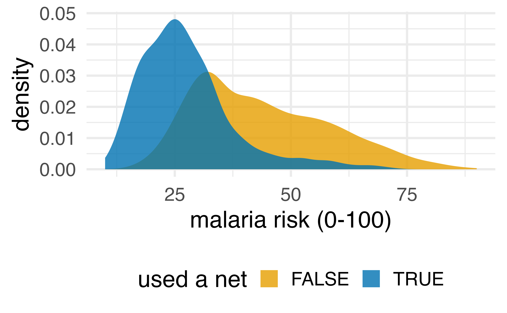
Do net users have lower malaria risk?
draw your assumptions
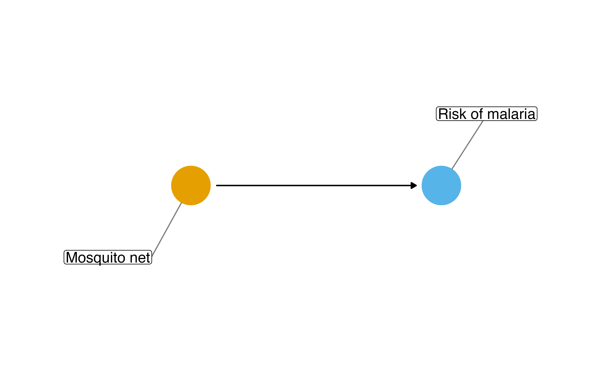
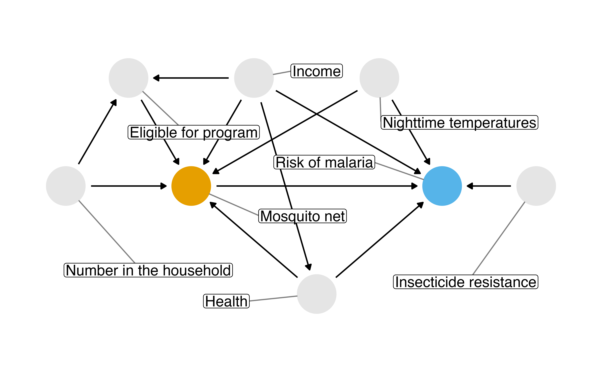
What do I need to control for?
One causal path, seven confounding

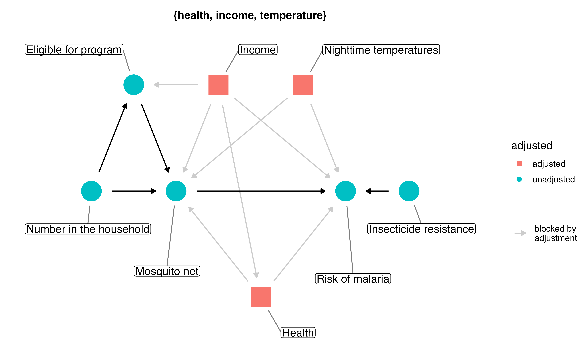
Multivariable regression: what’s the association?
# A tibble: 1 × 7
term estimate std.error statistic p.value conf.low
<chr> <dbl> <dbl> <dbl> <dbl> <dbl>
1 netTRUE -12.0 0.314 -38.2 2.69e-232 -12.6
# ℹ 1 more variable: conf.high <dbl>model your assumptions
counterfactual: what if everyone used a net vs. what if no one used a net
Fit propensity score model
Calculate inverse probability weights
diagnose your model assumptions
What’s the distribution of weights?
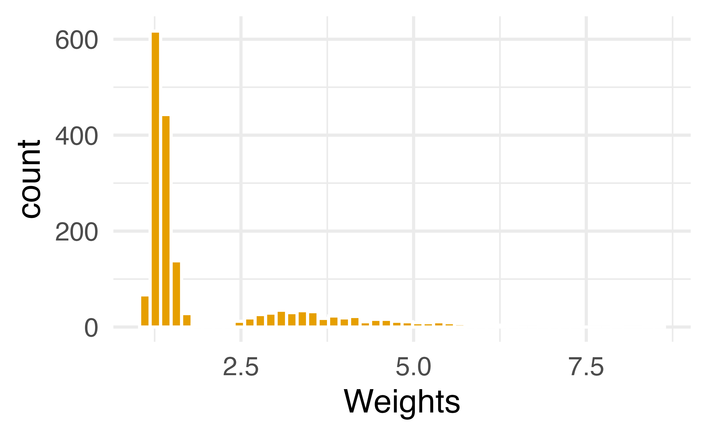
What are the weights doing?
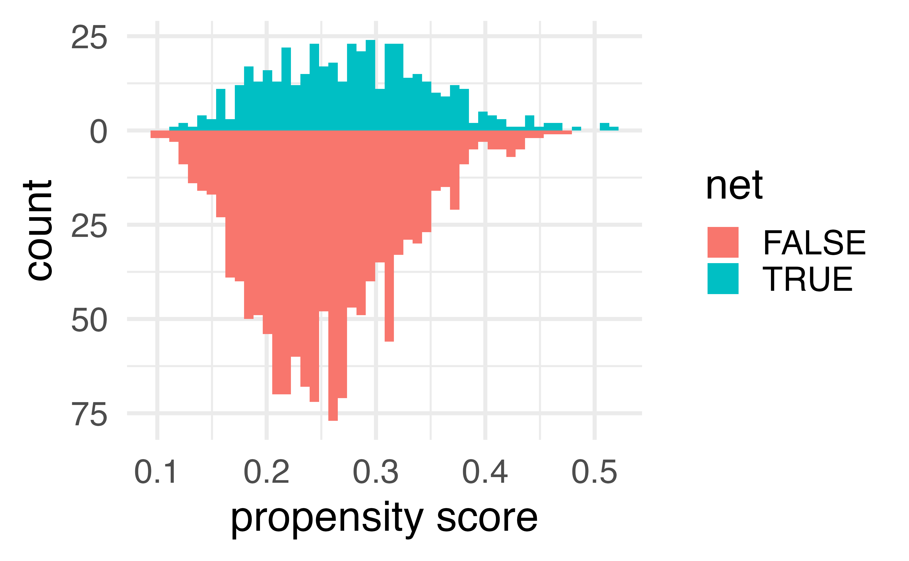
What are the weights doing?
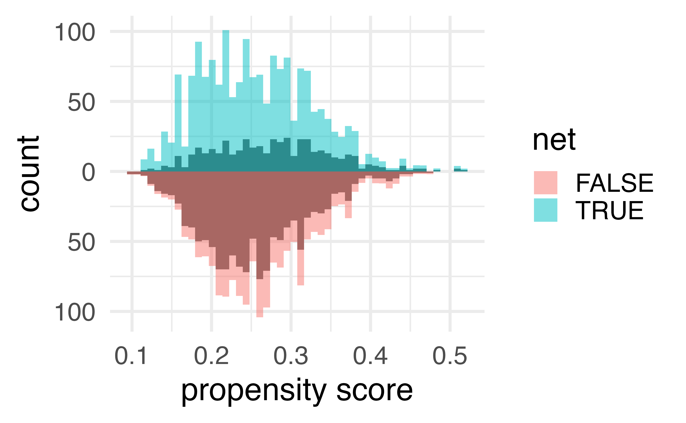
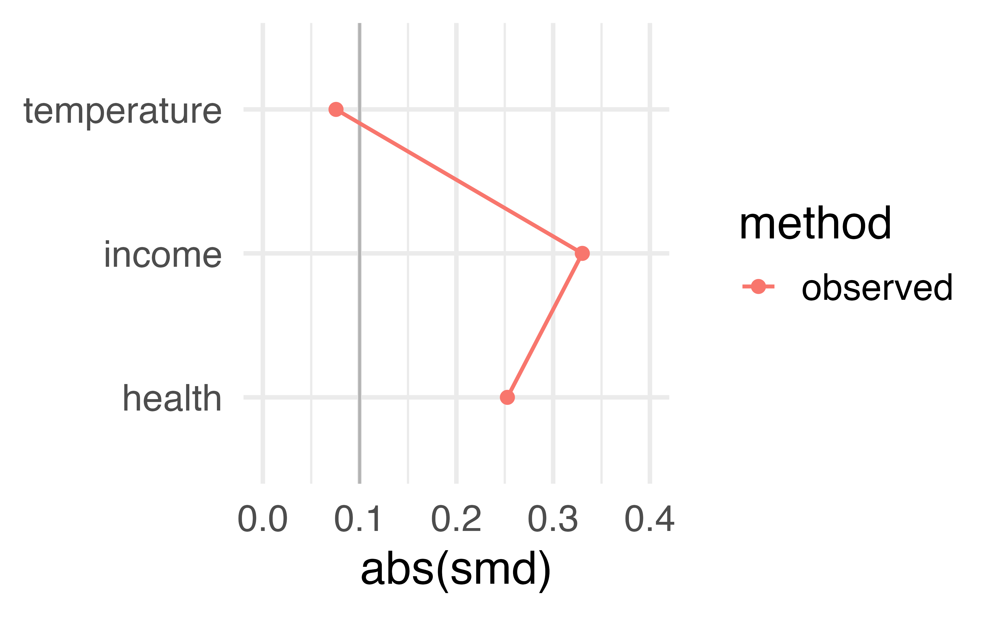
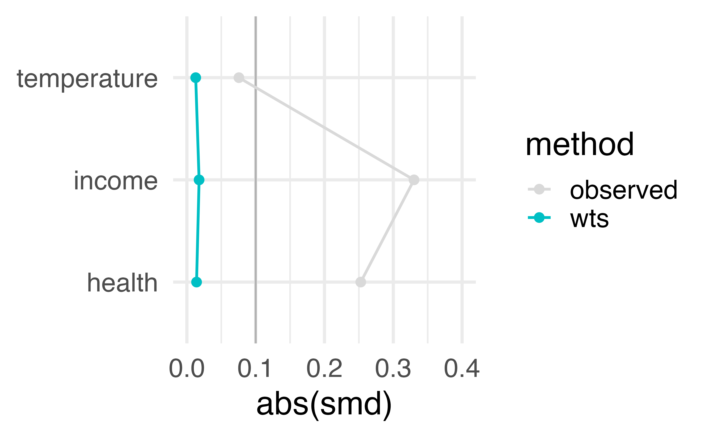
estimate the causal effects
Estimate causal effect with IPW
Estimate causal effect with IPW
Let’s fix our confidence intervals with robust SEs!
Let’s fix our confidence intervals with robust SEs!
Let’s fix our confidence intervals with the bootstrap!
fit_ipw <- function(.split, ...) {
# get bootstrapped data frame
.df <- as.data.frame(.split)
# fit propensity score model
propensity_model <- glm(
net ~ income + health + temperature,
family = binomial(),
data = .df
)
# calculate inverse probability weights
.df <- propensity_model |>
augment(type.predict = "response", data = .df) |>
mutate(wts = wt_ate(.fitted, net))
# fit correctly bootstrapped ipw model
lm(malaria_risk ~ net, data = .df, weights = wts) |>
tidy()
}Using {rsample} to bootstrap our causal effect
Using {rsample} to bootstrap our causal effect
Using {rsample} to bootstrap our causal effect
# A tibble: 1 × 6
term .lower .estimate .upper .alpha .method
<chr> <dbl> <dbl> <dbl> <dbl> <chr>
1 netTRUE -13.4 -12.5 -11.6 0.05 student-tLet’s fix our confidence intervals with ipw()!
ipw()uses a sandwich estimator that also accounts for the uncertainty in the propensity score model- Bring your own models: you fit the propensity score and outcome models yourself, then supply them to
ipw()
Let’s fix our confidence intervals with ipw()!
Inverse Probability Weight Estimator
Estimand: ATE
Effects: marginal (population-averaged)
Weight Estimator:
Call: glm(formula = net ~ income + health + temperature, family = binomial(),
data = net_data)
Outcome Model:
Call: lm(formula = malaria_risk ~ net, data = net_data_wts, weights = wts)
Marginal estimates:
estimate std.err z ci.lower ci.upper conf.level p.value
diff -12.54476 0.43712 -28.698 -13.402 -11.688 0.95 < 2.2e-16 ***
---
Signif. codes: 0 '***' 0.001 '**' 0.01 '*' 0.05 '.' 0.1 ' ' 1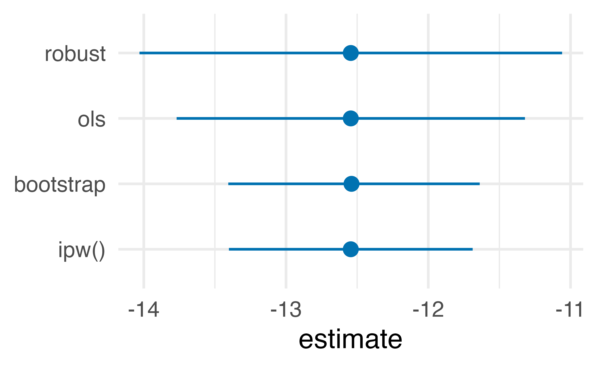
conduct a sensitivity analysis
Spoiler alert: the answer we just calculated is wrong
How much confounding would tip our estimate?
How much confounding would tip our estimate?
# A tibble: 5 × 2
exposure_confounder_effect confounder_outcome_effect
<int> <dbl>
1 1 -11.6
2 2 -5.82
3 3 -3.88
4 4 -2.91
5 5 -2.33
What would it take to explain away our estimate?
- A confounder with a scaled mean difference of 1 between net users and non-users would need an effect of -11.6 on malaria risk
- If the scaled mean difference were 5, an effect of -2.3 would be enough
An unmeasured confounder: genetic resistance to malaria
- People with this genetic resistance have a malaria risk lower by about 10
- About 26% of people who use nets have this genetic resistance
- About 5% of people who don’t use nets have this genetic resistance
Adjust the estimate for the unmeasured confounder
Adjust the estimate for the unmeasured confounder
# A tibble: 3 × 2
effect_observed effect_adjusted
<dbl> <dbl>
1 -12.5 -10.4
2 -13.4 -11.3
3 -11.6 -9.54The DAG that generated the data
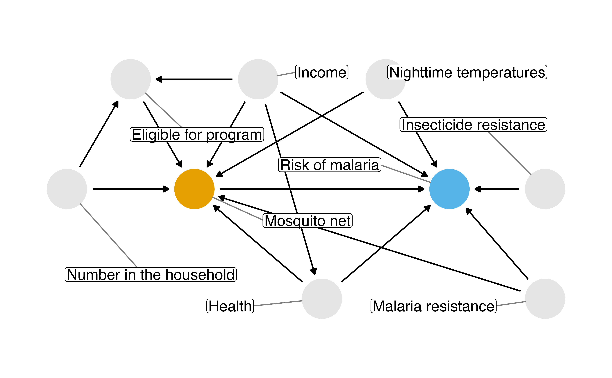
fit_ipw_full <- function(.split, ...) {
# get bootstrapped data frame
.df <- as.data.frame(.split)
# add genetic resistance to the propensity score model
propensity_model <- glm(
net ~ income + health + temperature + genetic_resistance,
family = binomial(),
data = .df
)
# calculate inverse probability weights
.df <- propensity_model |>
augment(type.predict = "response", data = .df) |>
mutate(wts = wt_ate(.fitted, net))
# fit correctly bootstrapped ipw model
lm(malaria_risk ~ net, data = .df, weights = wts) |>
tidy()
}Re-estimate the effect with the confounder measured
Re-estimate the effect with the confounder measured
# A tibble: 1 × 6
term .lower .estimate .upper .alpha .method
<chr> <dbl> <dbl> <dbl> <dbl> <chr>
1 netTRUE -11.1 -10.3 -9.31 0.05 student-t